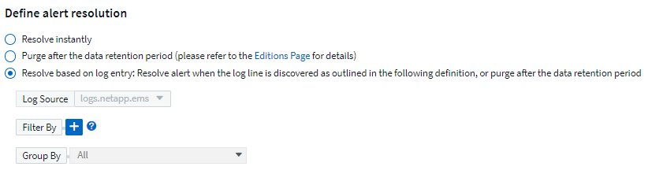
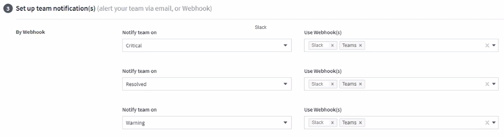

Richiedi modifiche alla documentazione
Richiedi modifiche alla documentazione Modifica questa pagina
Modifica questa pagina Scopri come collaborare
Scopri come collaborareAvvisi con i monitor
Collaboratori
È possibile creare monitor per impostare soglie che attivino avvisi per segnalare problemi relativi alle risorse della rete. Ad esempio, è possibile creare un monitor per avvisare della latenza di scrittura del nodo per una moltitudine di protocolli.

|
Monitor e avvisi sono disponibili in tutte le edizioni Cloud Insights, tuttavia, l’edizione di base è soggetta a quanto segue: * È possibile che siano attivi solo cinque monitor personalizzati alla volta. Tutti i monitor oltre i cinque verranno creati o spostati nello stato Paused. * I monitor VMDK, Virtual Machine, host e datastore non sono supportati. Se sono stati creati dei monitor per queste metriche, questi verranno messi in pausa e non potranno essere ripristinati durante il downgrade a Basic Edition. |
I monitor consentono di impostare soglie sulle metriche generate da oggetti "infrastruttura" come storage, VM, EC2 e porte, nonché per i dati di "integrazione" come quelli raccolti per Kubernetes, metriche avanzate di ONTAP e plug-in Telegraf. Questi metric monitors avvisano l’utente quando vengono superate le soglie del livello di avviso o critico.
È inoltre possibile creare monitor per attivare avvisi a livello di avviso, critico o informativo quando vengono rilevati eventi di log specificati.
Cloud Insights fornisce una serie di "Monitor definiti dal sistema" inoltre, in base al tuo ambiente.
Best practice per la sicurezza
Gli avvisi Cloud Insights sono progettati per evidenziare i punti dati e le tendenze nell’ambiente in uso e Cloud Insights consente di inserire qualsiasi indirizzo e-mail valido come destinatario dell’avviso. Se si lavora in un ambiente sicuro, prestare particolare attenzione a chi riceve la notifica o a chi ha accesso all’avviso.
Metriche o Log Monitor?
-
Dal menu Cloud Insights, fare clic su Avvisi > Gestisci monitor
Viene visualizzata la pagina dell’elenco Monitor, che mostra i monitor attualmente configurati.
-
Per modificare un monitor esistente, fare clic sul nome del monitor nell’elenco.
-
Per aggiungere un monitor, fare clic su + Monitor.

Quando si aggiunge un nuovo monitor, viene richiesto di creare un monitor metrico o un monitor di registro.
-
Metric monitora gli avvisi sui trigger relativi all’infrastruttura o alle performance
-
Log monitora gli avvisi sulle attività correlate al log
Dopo aver scelto il tipo di monitor, viene visualizzata la finestra di dialogo Configurazione monitor. La configurazione varia a seconda del tipo di monitor che si sta creando.
-
Monitor metrico
-
Nell’elenco a discesa, cercare e scegliere un tipo di oggetto e una metrica da monitorare.
È possibile impostare i filtri per limitare gli attributi o le metriche degli oggetti da monitorare.

Quando si lavora con i dati di integrazione (Kubernetes, dati avanzati ONTAP, ecc.), il filtraggio metrico rimuove i singoli punti dati/non corrispondenti dalla serie di dati plottati, a differenza dei dati dell’infrastruttura (storage, VM, porte, ecc.) in cui i filtri funzionano sul valore aggregato della serie di dati e potenzialmente rimuovono l’intero oggetto dal grafico.
|
|
Per creare un monitor multi-condizione (ad esempio, IOPS > X e latenza > Y), definire la prima condizione come soglia e la seconda condizione come filtro. |
Definire le condizioni del monitor.
-
Dopo aver scelto l’oggetto e la metrica da monitorare, impostare le soglie del livello di avviso e/o critico.
-
Per il livello Warning, immettere 200 come esempio. La linea tratteggiata che indica questo livello di avviso viene visualizzata nel grafico di esempio.
-
Per il livello critico, immettere 400. La linea tratteggiata che indica questo livello critico viene visualizzata nel grafico di esempio.
Il grafico mostra i dati storici. Le righe di avviso e livello critico sul grafico rappresentano una rappresentazione visiva del monitor, in modo da poter vedere facilmente quando il monitor potrebbe attivare un avviso in ogni caso.
-
Per l’intervallo di ricorrenza, scegliere Continuously per un periodo di 15 minuti.
Puoi scegliere di attivare un avviso quando una soglia viene violata o di attendere che la soglia si trovi in una violazione continua per un certo periodo di tempo. Nel nostro esempio, non vogliamo essere avvisati ogni volta che gli IOPS totali superano il livello di avviso o critico, ma solo quando un oggetto monitorato supera continuamente uno di questi livelli per almeno 15 minuti.

Log Monitor
Quando si crea un monitor Log, scegliere innanzitutto quale registro monitorare dall’elenco Available log (registri disponibili). È quindi possibile filtrare in base agli attributi disponibili, come descritto sopra. Puoi anche scegliere uno o più attributi "Raggruppa per".

|
Il filtro Log Monitor non può essere vuoto. |

Definire il comportamento degli avvisi
È possibile creare un monitor per avvisare con un livello di gravità di critico, Avviso o informativo, quando le condizioni sopra definite si verificano una sola volta (cioè immediatamente), oppure attendere che le condizioni si verifichino 2 o più volte.
Definire il comportamento di risoluzione degli avvisi
È possibile scegliere la modalità di risoluzione di un avviso di log monitor. Sono disponibili tre opzioni:
-
Risolvere immediatamente
-
Rimuovi dopo il periodo di conservazione dei dati (per ulteriori informazioni, fare riferimento alla pagina delle edizioni). Tenere presente che il monitor non dispone di alcuna condizione di risoluzione per definizione, pertanto un avviso rimane attivo e elimina tutti gli avvisi successivi con la corrispondenza group_by generata dal monitor, fino al termine del periodo di conservazione dei dati.
-
Resolve Based on log entry (Risolvi in base alla voce del registro): Consente di risolvere l’avviso quando la riga del registro viene rilevata come indicato nella seguente definizione o di eliminare i dati dopo il periodo di conservazione.

Selezionare il tipo di notifica e i destinatari
Nella sezione impostare le notifiche del team, puoi scegliere se avvisare il tuo team tramite e-mail o Webhook.

Avvisi via email:
Specificare i destinatari dell’e-mail per le notifiche degli avvisi. Se lo si desidera, è possibile scegliere diversi destinatari per gli avvisi di avviso o critici.

Avvisi via Webhook:
Specificare i webhook per le notifiche degli avvisi. Se lo si desidera, è possibile scegliere diversi webhook per gli avvisi critici o di avviso.

|
|
Le notifiche del Data Collector di ONTAP hanno la precedenza su qualsiasi notifica specifica del Monitor rilevante per il cluster/data collector. L’elenco dei destinatari impostato per Data Collector riceverà gli avvisi di data collector. Se non sono presenti avvisi di data collector attivi, gli avvisi generati dal monitor verranno inviati a destinatari specifici del monitor. |
Impostazione di azioni correttive o informazioni aggiuntive
È possibile aggiungere una descrizione opzionale, informazioni aggiuntive e/o azioni correttive compilando la sezione Aggiungi una descrizione dell’avviso. La descrizione può contenere fino a 1024 caratteri e verrà inviata con l’avviso. Il campo Insight/azione correttiva può contenere fino a 67,000 caratteri e verrà visualizzato nella sezione riepilogativa della landing page degli avvisi.
In questi campi è possibile fornire note, collegamenti o procedure per correggere o risolvere in altro modo l’avviso.

Salvare il monitor
-
Se lo si desidera, è possibile aggiungere una descrizione del monitor.
-
Assegnare un nome significativo al monitor e fare clic su Save (Salva).
Il nuovo monitor viene aggiunto all’elenco dei monitor attivi.
Elenco monitor
La pagina Monitor elenca i monitor attualmente configurati, mostrando quanto segue:
-
Nome monitor
-
Stato
-
Oggetto/metrica monitorati
-
Condizioni del monitor
È possibile scegliere di sospendere temporaneamente il monitoraggio di un tipo di oggetto facendo clic sul menu a destra del monitor e selezionando Pause (Pausa). Quando si è pronti per riprendere il monitoraggio, fare clic su Riprendi.
È possibile copiare un monitor selezionando Duplica dal menu. È quindi possibile modificare il nuovo monitor e modificare oggetto/metrica, filtro, condizioni, destinatari e-mail, ecc.
Se un monitor non è più necessario, è possibile eliminarlo selezionando Delete (Elimina) dal menu.
Gruppi di monitor
Il raggruppamento consente di visualizzare e gestire i monitor correlati. Ad esempio, è possibile disporre di un gruppo di monitor dedicato allo storage nell’ambiente o di monitoraggi relativi a un determinato elenco di destinatari.

Vengono visualizzati i seguenti gruppi di monitor. Il numero di monitor contenuti in un gruppo viene visualizzato accanto al nome del gruppo.
-
Tutti i monitor elenca tutti i monitor.
-
Custom Monitor elenca tutti i monitor creati dall’utente.
-
I monitor sospesi elencano tutti i monitor di sistema sospesi da Cloud Insights.
-
Cloud Insights visualizza inoltre una serie di gruppi di monitor di sistema, che elenranno uno o più gruppi di "monitor definiti dal sistema", Inclusi i monitor per l’infrastruttura e il carico di lavoro ONTAP.
|
|
I monitor personalizzati possono essere messi in pausa, ripristinati, cancellati o spostati in un altro gruppo. I monitor definiti dal sistema possono essere messi in pausa e ripristinati, ma non possono essere cancellati o spostati. |
Monitor sospesi
Questo gruppo viene visualizzato solo se Cloud Insights ha sospeso uno o più monitor. Un monitor potrebbe essere sospeso se genera avvisi eccessivi o continui. Se si tratta di un monitor personalizzato, modificare le condizioni per evitare l’invio di avvisi continui, quindi riprendere il monitor. Il monitor viene rimosso dal gruppo di monitor sospesi quando il problema che causa la sospensione viene risolto.
Monitor definiti dal sistema
Questi gruppi mostrano i monitor forniti da Cloud Insights, a condizione che l’ambiente contenga i dispositivi e/o la disponibilità dei log richiesti dai monitor.
I monitor definiti dal sistema non possono essere modificati, spostati in un altro gruppo o cancellati. Tuttavia, è possibile duplicare un monitor di sistema e modificare o spostare il duplicato.
I monitor di sistema possono includere monitor per l’infrastruttura ONTAP (storage, volume, ecc.) o carichi di lavoro (ad esempio, monitor di log) o altri gruppi. NetApp sta valutando costantemente le esigenze dei clienti e le funzionalità dei prodotti e aggiornerà o aggiungerà i monitor e i gruppi di sistema in base alle esigenze.
Gruppi di monitor personalizzati
È possibile creare gruppi personalizzati per contenere i monitor in base alle proprie esigenze. Ad esempio, potrebbe essere necessario un gruppo per tutti i monitor relativi allo storage.
Per creare un nuovo gruppo di monitor personalizzato, fare clic sul pulsante "+" Create New Monitor Group (Crea nuovo gruppo di monitor). Immettere un nome per il gruppo e fare clic su Create Group (Crea gruppo). Viene creato un gruppo vuoto con tale nome.
Per aggiungere monitor al gruppo, passare al gruppo All Monitors (consigliato) ed eseguire una delle seguenti operazioni:
-
Per aggiungere un singolo monitor, fare clic sul menu a destra del monitor e selezionare Add to Group (Aggiungi al gruppo). Scegliere il gruppo a cui aggiungere il monitor.
-
Fare clic sul nome del monitor per aprire la vista di modifica del monitor e selezionare un gruppo nella sezione Associa a un gruppo di monitor.

Rimuovere i monitor facendo clic su un gruppo e selezionando Remove from Group dal menu. Non è possibile rimuovere i monitor dal gruppo All Monitors o Custom Monitors. Per eliminare un monitor da questi gruppi, è necessario eliminarlo.
|
|
La rimozione di un monitor da un gruppo non elimina il monitor da Cloud Insights. Per rimuovere completamente un monitor, selezionarlo e fare clic su Delete. In questo modo viene rimosso anche dal gruppo a cui apparteneva e non è più disponibile per nessun utente. |
È anche possibile spostare un monitor in un gruppo diverso nello stesso modo, selezionando Move to Group (Sposta in gruppo).
Per mettere in pausa o riprendere contemporaneamente tutti i monitor di un gruppo, selezionare il menu del gruppo e fare clic su Pause o Resume.
Utilizzare lo stesso menu per rinominare o eliminare un gruppo. L’eliminazione di un gruppo non elimina i monitor da Cloud Insights, ma sono ancora disponibili in tutti i monitor.

Monitor definiti dal sistema
Cloud Insights include una serie di monitor definiti dal sistema per metriche e registri. I monitor di sistema disponibili dipendono dai data collezions presenti nell’ambiente. Per questo motivo, i monitor disponibili in Cloud Insights potrebbero cambiare in base all’aggiunta di data collezions o alla modifica delle configurazioni.
Visualizzare il "Monitor definiti dal sistema" Per le descrizioni dei monitor inclusi in Cloud Insights.